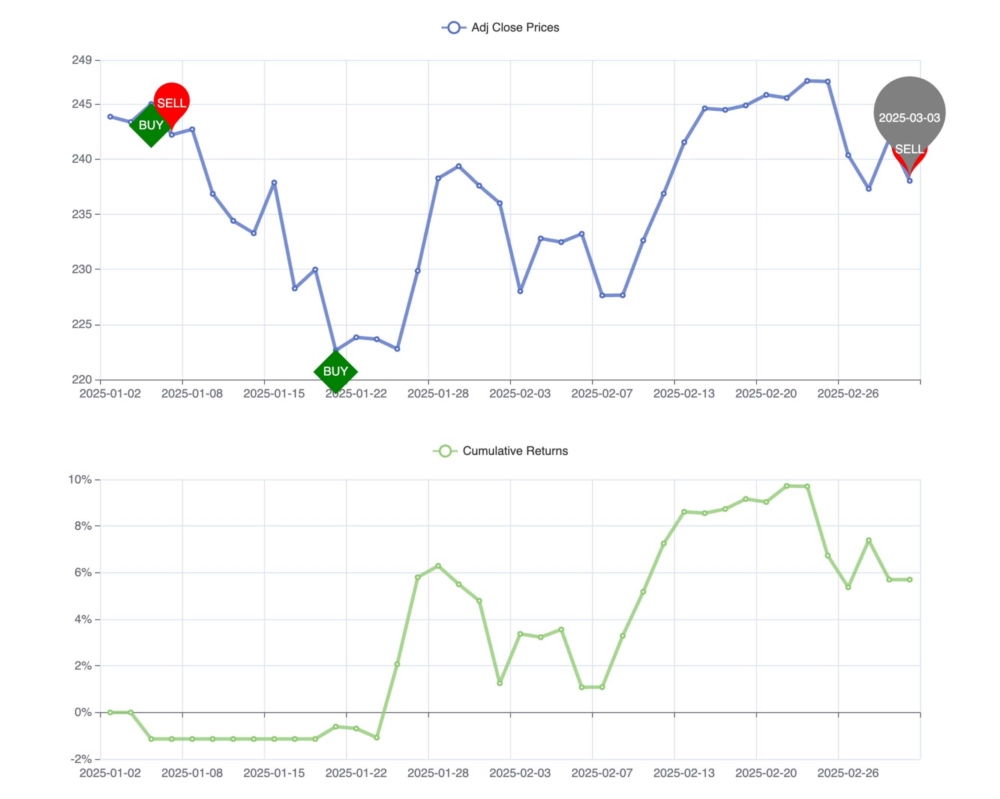

FinAgent: A Multimodal Foundation Agent for Financial Trading
FinAgent is a multimodal foundation agent designed for financial trading that addresses adaptability and generalization through three key components: (i) a market intelligence module, extracting and summarizing key insights from diverse market information, including daily updates on stock news, prices, and monthly and quarterly financial reports; (ii) a reflection module, performing dual-level reflection on market dynamics and past decisions; and (iii) a tool-augmented decision-making module, enhancing trading actions through expert-informed guidance.

We will now use examples and prompt templates to illustrate how FinAgent relies on role-play, memory, and reflection to make informed trading decisions.
Role-play
FinAgent is guided by a high-level role description that ensures consistent expertise in market analysis and financial decision-making. This role-play specification contains three aspects: the definition of the agent's role, the context of the financial market environment, and the agent's analytical capabilities for trading.
Example of role-playing as an expert financial trader
Role: You are an expert trader who have sufficient financial experience and provides expert guidance.
Context: Imagine working in a real market environment where you have access to various types of information (e.g., daily real-time market price, news, financial reports, professional investment guidance and market sentiment) relevant to financial markets. You will be able to view visual data that contains comprehensive information, including Kline charts accompanied by technical indicators, historical trading curves and cumulative return curves. And there will be some auxiliary strategies providing you with explanations for trading decisions.
Capabilities: You are capable of deeply analyzing, understanding, and summarizing information, and use these information to make informed and wise trading decisions (i.e., BUY, HOLD and SELL).
Memory
Memory plays a crucial role in multimodal LLM-based financial trading agents. In FinAgent, the memory module adopts a vector-based storage architecture consisting of three main components: (i) summary of market intelligence, which collects, summarizes, analyzes, and extracts key insights from diverse multimodal financial data sources; (ii) summary of low-level reflection, which identifies potential patterns in price movements and derives insights from market intelligence summaries; and (iii) summary of high-level reflection, which stores and reflects on past trading decisions. The stored summaries are subsequently used as inputs for other modules. For example, summaries of both past and latest market intelligence are provided as input data to the reflection prompts.
Reflection
FinAgent incorporates a dual-level reflection mechanism: (i) Low-level reflection, which analyzes price change data to reason about and identify potential patterns in market movements; and (ii) High-level reflection, which focuses on past trading decisions, summarizing overarching lessons from both successes and failures to recommend improvements and suggest corrective trading actions.
Example of analyzing market dynamics with low-level reflection
INPUT:
Summaries of latest market intelligence: Positive sentiment prevails with expectations around Apple's new AR/VR...The overall market sentiment appears POSITIVE in the medium term...
Summaries of past market intelligence: Apple shows resilience and innovation strength, which are likely to maintain investor confidence and could drive the company's market value upward...
Kline chart:

Task: As the above Kline chart shows, Short-Term (provided by Market intelligence): Over the past 1 day, the price movement ratio has shown an increase of 1.60%, Medium-Term (provided by Market intelligence): ... You should analyze the above information on the reasoning that lead to past to now price movements...
Desired format:
reasoning: This field will be used for trading decisions...provide the detailed reasoning to determine how the above information that lead to the price movements...
query: (tailored to enable focused retrieval of specific types of information) This field will be used to retrieve past reasoning for price movements...
OUTPUT:
reasoning: The short-term price increase of 1.60% for Apple Inc. (AAPL) can be attributed to recent positive market sentiment surrounding Apple's upcoming AR/VR product line. Over the past week, AAPL has seen a 3.38% rise can be linked to positive expectations of new product releases... query: Short-term growth in AAPL's price is driven by reactions to product excitement and concerns, medium-term gains come from the positive...Example of analyzing past decisions with high-level reflection
INPUT:
Summaries of latest market intelligence: Positive sentiment prevails with expectations around Apple's new AR/VR...The overall market sentiment appears POSITIVE in the medium term...
Summaries of past market intelligence: Apple shows resilience and innovation strength, which are likely to maintain investor confidence and could drive the company's market value upward... Reasoning of low-level reflection: The short-term price increase of 1.60% for AAPL can be attributed to recent positive market sentiment surrounding Apple's upcoming AR/VR product line...
Historical action and reasoning: Trading decision and reasoning made by your assistant for the past 14 days are as follows: 2023-06-01. BUY... The analysis indicates a bullish future trend, aligning with the need to consider a BUY in such a scenario...
Trading chart:
Task in desired format:
reasoning: You should reflect on the decisions made at each time were right or wrong and give reasoning...
improvement: If there are bad decisions, are you likely to revise them and maximize the return? If so, how would you revise them?...
summary: Provide a summary of the lessons learnt from the success / mistakes that can be adapted to future trading decisions...
query: (tailored to enable focused retrieval of specific types of information) This field will be used to retrieve past reflection of the decisions, so you should...
OUTPUT:
reasoning: The BUY decision made on 2023-06-01 appears to have been correct. This decision aligned well with the market sentiment and the Kline chart analysis... improvement: However, constant vigilance and responsiveness to both upward and downward market signals are crucial. For future scenario balancing, it could involve dynamic trade adjustments such as setting stop-losses to mitigate risks... summary: The success of the BUY decision on 2023-06-01 underscores the importance of comprehensive market analysis, incorporating factors such as market sentiment... query: The price movement analysis and technical indicators provided a compelling case for a bullish trend, thereby justifying the action to buy...
If you find this work helpful, please consider citing our paper:
@article{hu2025llm_agents_tutorial,
title={A Beginner-Friendly Tutorial on LLM-based Agents},
author={Hu, Shuyue and Ren, Siyue and Chen, Yang and Mu, Chunjiang and Liu, Jinyi and Cui, Zhiyao and Zhang, Yiqun and Li, Hao and Zhou, Dongzhan and Xu, Jia and Zhang, Qiaosheng and Han, Chu and Zheng, Yan and Hao, Jianye and Wang, Zhen},
year={2025},
month={November},
note={Manuscript in preparation}
}